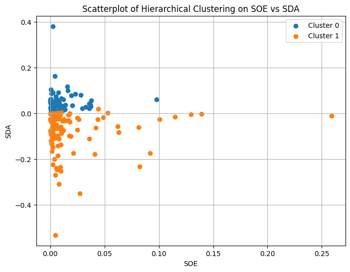
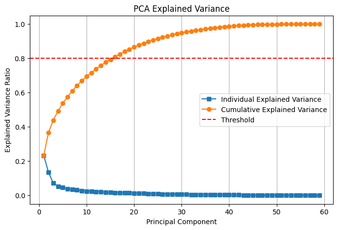
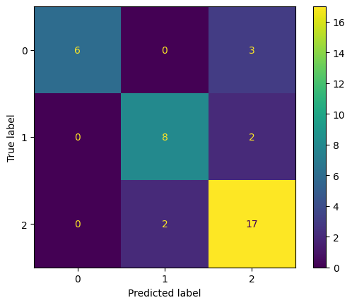

CSCI 5612 Machine Learning for Data Science:
Regional Climate Factor Analysis:
Results
Of the methods utilized across this project, the most interesting to analyze are the three supervised learning models: Naive Bayes, Decision Tree, and Gradient Boosting. Before those though, a quick summary of the two earlier applied methods:
Clustering
Clustering, both K-Means and Hierarchical, was not impactful. The insights gained from these methods were largely unable to capture many meaningful or novel patterns. Many combinations of features were tested, but the only interesting pattern was observed when combining SOE (Sulfur Dioxide Exposure) and SDA (Sulfur Dioxide Growth Rate). Sulfur dioxide is notable for reducing global warming through multiple methods, but for this project it is solely regarded as a pollutant that is harmful to people. The output of Hierarchical Clustering on the scatterplot of SOE vs SDA is shown below.

The graph shows a clear horizontal divide between the two clusters.
This number of clusters was found to be optimal via the silhouette score applied to this combination of features.
The two clusters shows the following patterns about countries, in relation to sulfur dioxide exposure and emissions:
• Countries with low amounts of sulfur dioxide exposure tend to have increasing amounts of it.
This indicates that countries with relatively okay exposure now will likely see it worsen in the near future.
• Outliers with extreme amounts of exposure had practically stable levels of sulfur dioxide in the atmosphere.
• Countries with already high amounts of sulfur dioxide tend to see decreases in its concentration.
This may show efforts in strongly affected areas to decrease emissions after health effects started to become notable.
It may also show that sulfur dioxide levels globally are generally equalizing, rather than becoming more extreme.
Principal Component Analysis
Principal Component Analysis was the other attempted method in this early stage of the project. It returned similarly poor results, although with mixed application. The result of PCA applied to this dataset can be shown plainly with this graph of the explained variances.

The unfortunate result is that PCA was not applicable to this dataset. The very gradual curve of the cumulative variance shows that a meaningful reduction in dimensionality would require a significant loss in explained variance. Alternatively, setting a more reasonable threshold for explained variance would eliminate so few features as to be worthless to perform.
While PCA was not useful to perform, is was also not significant to ignore. The dataset used throughout this project was small, with only 220 samples. This is justified by each sample being a country, and with approximately 28 features this equated to a succinct view of the pollution present in each country. Performing dimensionality reduction on this dataset, even if it could have removed many unimportant features, would not have made a significant improvement to performance anyways. Thus, the lack of PCA is not impactful to the performance or other results of this project.
Supervised Learning Methods
The results of the Naive Bayes, Decision Tree, and Gradient Boosting models were significant, novel, and interesting. Out of the three, the Naive Bayes model showed moderate performance overall. There was no specialty that it performed best in, and its F1-score of 0.81 was respectable (with similar scores in other metrics).

The value 1 corresponds to "low", 2 to "normal", and 0 to "high" risk levels based on the ND-GAIN Index.
Following Naive Bayes, a Decision Tree model was trained. Looking at its performance metrics, the model performed worse with an F1-score of 0.76. However, this score does not capture that the model was able to perfectly predict cases where a country was at high risk from climate change. This specialization is important as determining these cases can be helpful in the allocation of resources and help to mitigate and prepare for damage from climate change. The otherwise poor performance of the model is thus acceptable, assuming this important factor is the target of predictions.

The value 1 corresponds to "low", 2 to "normal", and 0 to "high" risk levels based on the ND-GAIN Index.
The final supervised learning model was Gradient Boosting, which performed generally better than the prior two. This model seemed to be a combination of the Naive Bayes and Decision Tree models, as it showed better general performance than both (F1-score of 0.84) and retained most of the specialization of the Decision Tree. From these results, the Gradient Boosting model is likely the best for all applications out of the three optimized models.